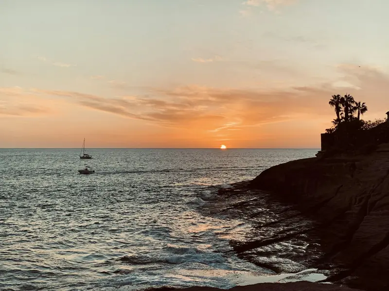
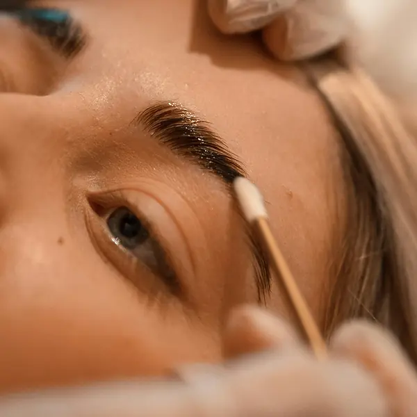
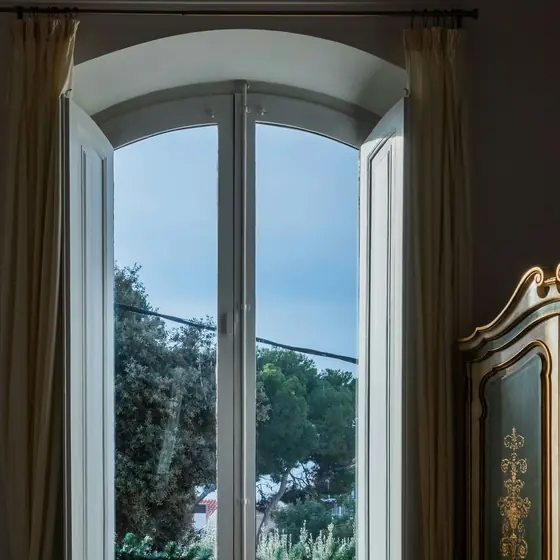

Uñas de gel
Manicura completa con gel de larga duración.
35 €
Ideas taken from Cult UI, Watermelon UI and Skiper UI, rebuilt without React. Nothing stays hidden if a script fails, and everything switches off for people who ask their phone for less motion.
Scroll through on your phone, then send me the numbers worth keeping.
More labs: Photos (P) · Headlines and text (T) · Atmosphere, numbers and strips (A) · Interaction (I)
01, 02, 03 and 05 follow your finger as you scroll. They run in Chrome, Edge, Samsung Internet and Safari 26 or newer; in older browsers you see the finished state, with nothing missing. The businesses below are the fictional showroom ones, and every price is an example.
A big photo starts cropped with rounded corners and opens out to the full screen as it scrolls in. For the one signature moment on a restaurant, terrace or tour site.

Ocaso · La Caleta
Mesa en primera fila para la puesta de sol.
Each card sticks and the next one slides over it, while the ones underneath shrink back. For services, prices, steps of a job, or menu sections.
Lúnula Studio · Los Cristianos
Manicura completa con gel de larga duración.
35 €

Punta blanca clásica, natural y limpia.
30 €

Extensiones una a una, mirada natural.
55 €

Cejas peinadas y fijadas hasta seis semanas.
28 €
Precios de ejemplo
The line draws as you scroll and each stop lights up when the line reaches it. For a tour itinerary, a delivery area, or a hand-drawn underline.
Cielo Ucanca · ruta de ejemplo
Tap a dish: its photo and name fly into place as the detail opens, and they fly back when you close it. For dishes, tours, treatments or rooms.
Carta de ejemplo · toca un plato
Pulpo de roca a la brasa sobre papas arrugadas, con mojo rojo de la casa.
16,50 € · precio de ejemplo
Lo que entró esta mañana en el muelle, a la plancha con ajo, perejil y limón.
18 € · precio de ejemplo
Pan de masa madre, aguacate machacado, lima y sésamo tostado.
8,50 € · precio de ejemplo
A normal swipe gallery, but the photos either side of the centre one tilt and fall back as you swipe. For rooms, haircuts, finished jobs or dishes.
Casa Tea · La Orotava · desliza




Each word slides up out of an invisible slot, one after another, once, when the headline comes into view. For an opening line with attitude.
Tasca Picón · Puerto de la Cruz
Sections that end in a shape from the business's own world instead of a straight line. No motion: this is a world-building tool.
Labels that look carved out of the photo's corner, and a price card with a dog-eared corner. For "Nuevo" tags, prices and a menú del día.
Tasca Picón · ejemplo
Lunes a viernes
14 €
Precio de ejemplo
A fine film grain over the photo, and the photo settles from slightly zoomed in to still, once. Makes a stock-looking photo feel shot on film. For a hero.

Cielo Ucanca
You've said before you like this one. The headline types itself out with a moving cursor. Screen readers get the whole line straight away. Best for trades and agencies; too techy for restaurants or hotels.
Fase Neutro · Adeje · ejemplo
The business name set huge enough to fill the full width of the footer, on any screen. A confident sign-off that costs nothing.
Motion lab · Teide Digital · internal, not indexed. Photos: Unsplash licence, from the showroom samples.